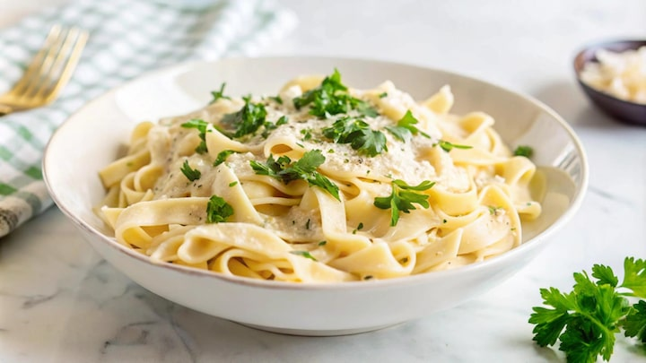

About the Recipe
This creamy white sauce pasta is rich, cheesy, and packed with delicious
flavors. It is perfect for lunch, dinner, or whenever you're craving a
comforting homemade meal.
Ingredients
- 250 g Pasta
- 2 tbsp Oil
- 2 tbsp Butter
- 2 tbsp Maida
- 2 cups Milk
- 3 Cheese Cubes
- 1 tbsp White Mayonnaise
- 2 Medium Onions (finely chopped)
- 2–3 Garlic Cloves (finely chopped)
- 1 Packet Maggi Masala
- 1 tbsp Schezwan Sauce
- Oregano
- Chilli Flakes
- Salt
- Black Pepper
- Fresh Cream / Malai (Optional)
Preparation Steps
- Boil the pasta until it is soft.
- Heat oil and butter in a pan.
- Add chopped garlic and sauté for about a minute.
- Add chopped onions and cook until translucent.
- Add maida and cook for 2 minutes on low flame.
- Slowly pour in the milk while stirring continuously to avoid lumps.
- Add black pepper and cook until the sauce comes to a gentle boil.
- Add Maggi Masala, Schezwan Sauce and White Mayonnaise.
- Add cheese cubes and stir until completely melted.
- Add the boiled pasta and mix well.
- Garnish with oregano and chilli flakes. Serve hot.
Recipe Information
| Preparation Time |
15 Minutes |
| Cooking Time |
20 Minutes |
| Servings |
4 People |
| Difficulty |
Easy |
🍽 Nutritional Information
Serving Size: 1 Bowl (Recipe serves 4)
| Nutrient |
Per Serving |
| Calories |
610 kcal |
| Carbohydrates |
56 g |
| Protein |
16 g |
| Fat |
36 g |
| Saturated Fat |
16 g |
| Fiber |
3 g |
| Sugar |
7 g |
| Sodium |
800 mg |
| Calcium |
275 mg |
*Values are approximate and may vary depending on the ingredients and brands used.
👨🍳 Chef's Tips
- Add some oil in the boiling water to prevent the pasta from sticking.
- Add fresh cream or malai in the end for extra richness.
- Serve immediately for the creamiest and most delicious pasta.
⭐ Rate This Recipe
★
★
★
★
★
Click on the stars to rate this recipe!